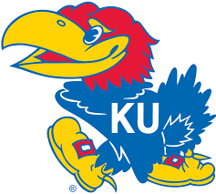

The Jayhawk

Mascots are believed to bring good luck, especially to athletic teams. Just about every college claims a mascot. The University of Kansas is home of the Jayhawk, a mythical bird with a fascinating history. Its origin is rooted in the historic struggles of Kansas settlers. The term "Jayhawk" was probably coined about 1848. Accounts of its use appeared from Illinois to Texas. The name combines two birds--the blue jay, a noisy, quarrelsome thing known to rob other nests, and the sparrow hawk, a stealthy hunter. The message here: Don't turn your back on this bird.